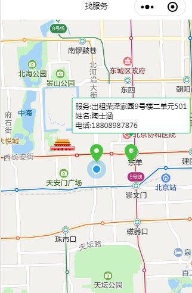

1.map组件的高度如果想要铺满屏幕，要是使用height:100vh样式
2.获取位置要在app.json中标明权限
3.先使用wx.getLocation获取自己的位置，然后再回调中使用setData方法，赋予数据给前台页面展示标注点
index.js
//index.js
//获取应用实例
const app = getApp()
Page({
data: {
},
onLoad: function () {
var self=this;
this.mapCtx = wx.createMapContext('myMap');
wx.getLocation({
type: 'gcj02',
success(res) {
self.setData({
latitude : res.latitude,
longitude : res.longitude,
markers: [{
id: 1,
latitude: res.latitude,
longitude: res.longitude,
iconPath: '/image/location.png',
callout:{
content:"服务:青少年英语培训\r\n姓名:陶士涵\r\n电话:18808987876",
bgColor:"#fff",
padding:"5px",
borderRadius:"2px",
borderWidth:"1px",
borderColor:"#07c160",
}
},
{
id: 2,
latitude: res.latitude,
longitude: res.longitude+0.01,
iconPath: '/image/location.png',
callout: {
content: "服务:出租龙兴园西区9号楼二单元501\r\n姓名:陶士涵\r\n电话:18808987876",
bgColor: "#fff",
padding: "5px",
borderRadius: "2px",
borderWidth: "1px",
borderColor: "#07c160",
}
}
],
});
}
})
},
})index.wxml
<!--index.wxml-->
<map
id="myMap"
style="width: 100%; height:100vh;"
latitude="{{latitude}}"
longitude="{{longitude}}"
markers="{{markers}}"
covers="{{covers}}"
show-location
></map>app.json
{
"pages": [
"pages/index/index",
"pages/logs/logs"
],
"window": {
"backgroundTextStyle": "light",
"navigationBarBackgroundColor": "#fff",
"navigationBarTitleText": "找服务",
"navigationBarTextStyle": "black"
},
"sitemapLocation": "sitemap.json",
"permission": {
"scope.userLocation": {
"desc": "你的位置信息将用于获取周边服务"
}
}
}